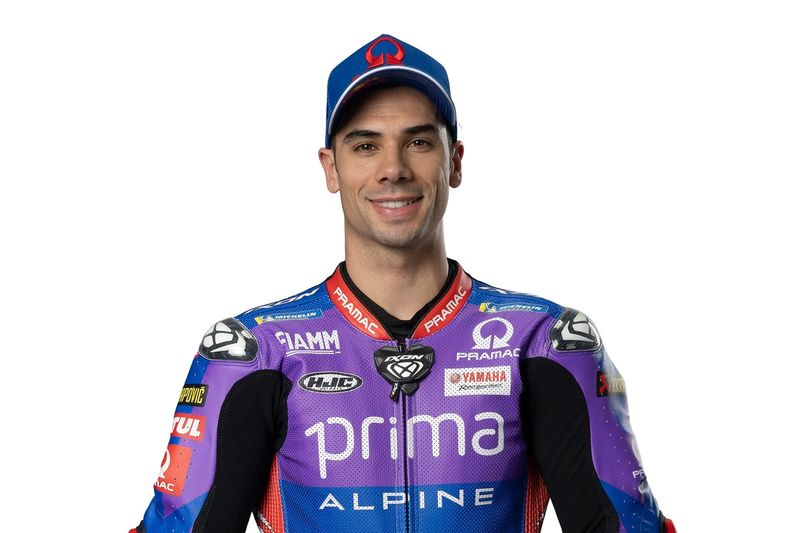

Estás en: Inicio >> Piloto
Miguel Oliveira
Miguel Ângelo Falcão de Oliveira (Almada, 4 de enero de 1995) es un piloto de motociclismo portugués que participa en la categoría de MotoGP con el Prima Pramac Racing.
Ha ganado experiencia en Moto3, habiendo competido por Estrella Galicia 0,0 en 2012 y el Mahindra Racing team en 2013 y 2014. En septiembre de 2014 firmó con Red Bull KTM Ajo de Moto2, con el que fue subcampeón del mundo en 2015.

Datos interesantes
- Nombre: Miguel Ângelo Falcão de Oliveira
- Lugar de Nacimiento: Almada, Portugal
- Altura: 1,7 m
- Peso: 64 kg
- Moto: Yamaha
- Dorsal: 88
Recorrido
- Aprilia
- Suter Honda
- Mahindra
- Mahindra
- KTM
- Kalex
- KTM
- KTM
- KTM
- KTM
- KTM
- KTM
- Aprilia
- Aprilia
- Yamaha
Conceptos
| Puntos | Posición | Poles | Victorias | Podios |
|---|---|---|---|---|
| 75 | 15 | 0 | 0 | 0 |
Información de interés
Info: Información Más información
Descripcción
Los primeros grandes éxitos de Miguel Oliveira llegaron en 2005 y 2006, cuando ganó el campeonato portugués de MiniGP. En 2009, fue tercero en el FIM CEV Repsol y en 2010 luchó contra Maverick Viñales hasta la última carrera de la temporada por el título, terminando finalmente segundo por solo dos puntos antes de su debut en el Campeonato Mundial en 2011. Oliveira corrió a tiempo completo en 2012 con el equipo Estrella Galicia 0,0 y consiguió dos podios, antes de unirse a Mahindra Racing en 2013 y acaparar titulares al conseguir el primer podio del fabricante indio en Malasia. En 2014, permaneció en Mahindra, consiguiendo otro podio en Assen, antes de ser fichado por Red Bull KTM Ajo para 2015. La temporada de Moto3™ tuvo un comienzo difícil para el piloto portugués, pero ganó tanto en Mugello como en Assen, antes de romperse la muñeca en Alemania. Toda esperanza parecía perdida cuando Danny Kent salió del GP británico con una ventaja de 110 puntos sobre el piloto de KTM, pero una remontada increíble vio a Oliveira conseguir cuatro victorias y dos segundos puestos en las últimas seis carreras y luchar hasta la ronda final, quedando segundo.